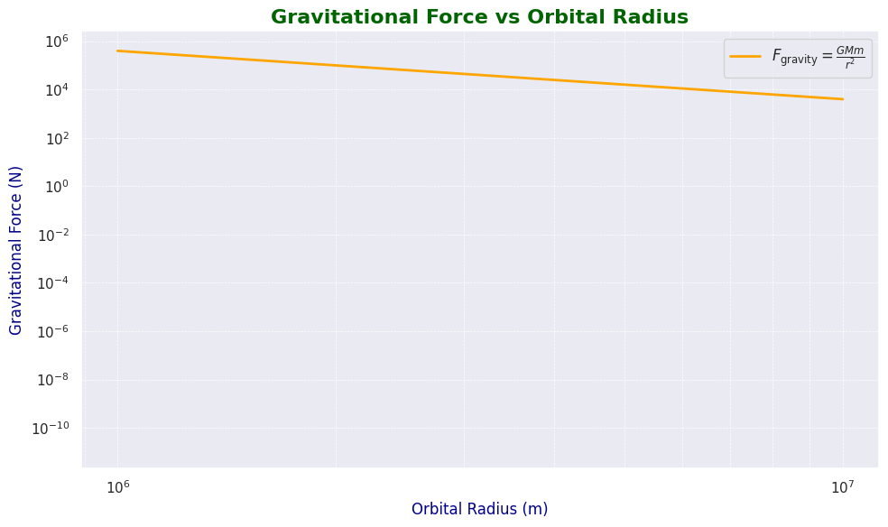
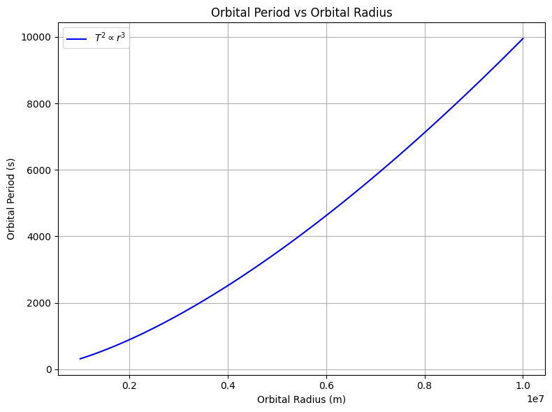

Problem 1
Orbital Period and Orbital Radius
Introduction
Kepler's Third Law of Planetary Motion states that the square of a planet's orbital period is directly proportional to the cube of its orbital radius. This relationship holds true for circular orbits and has significant implications for understanding celestial mechanics, orbital dynamics, and gravitational interactions.
In this document, we will: 1. Derive the relationship between the orbital period and orbital radius for circular orbits. 2. Discuss the implications for astronomy. 3. Analyze real-world examples like the Moon’s orbit around Earth. 4. Implement a computational model to simulate circular orbits and verify the relationship.
Kepler’s Third Law Derivation
Kepler’s Third Law for circular orbits can be derived using Newton’s Law of Universal Gravitation. The gravitational force between two masses \(M\) (the central body) and \(m\) (the orbiting body) provides the centripetal force required for circular motion. 
Step 1: Gravitational Force
The gravitational force between two objects is given by:
Where: - \(G\) is the gravitational constant (\(6.67430 \times 10^{-11} \, \text{m}^3 \text{kg}^{-1} \text{s}^{-2}\)), - \(M\) is the mass of the central object (e.g., Earth), - \(m\) is the mass of the orbiting object (e.g., satellite, planet), - \(r\) is the orbital radius (distance between the two objects).
Step 2: Centripetal Force
For circular motion, the centripetal force is provided by the gravitational force:
Where \(v\) is the orbital velocity.
Step 3: Orbital Velocity and Period
The orbital velocity \(v\) can be related to the orbital period \(T\) by:  $$ v = \frac{2 \pi r}{T} $$
Substituting this into the equation for centripetal force:
Simplifying the equation:
Rearranging to solve for \(T^2\):
Thus, the square of the orbital period is proportional to the cube of the orbital radius:
This is the mathematical form of Kepler’s Third Law for circular orbits.
Implications for Astronomy
Kepler’s Third Law has far-reaching implications in astronomy:
-
Determining Planetary Distances: By measuring the orbital period of a planet and knowing the mass of the central star (e.g., the Sun), we can calculate the orbital radius. This relationship allows astronomers to determine the distances between planets and stars.
-
Calculating Planetary Masses: For satellites and other objects orbiting a known central body (like a moon around a planet), the orbital period and radius can be used to estimate the mass of the central body.
-
Understanding Orbital Mechanics: The law helps explain the stability of orbits and the influence of gravitational forces on orbital bodies.
-
Simulating Orbits: The relationship allows for simulations of satellite orbits and planetary motions. It forms the basis for more complex orbital dynamics in both circular and elliptical orbits.
Real-World Example: The Moon’s Orbit Around Earth
The Moon’s orbit around Earth provides a clear example of Kepler’s Third Law in action. The Moon’s orbital period is approximately 27.3 days, and its average orbital radius is 384,400 km.
Using Kepler’s Third Law, we can calculate the mass of the Earth if we know the orbital period and radius of the Moon.
Python Implementation
We can simulate circular orbits using Kepler’s Third Law and visualize the relationship between orbital period and orbital radius.
Code for Orbital Simulation
import numpy as np
import matplotlib.pyplot as plt
# Constants
G = 6.67430e-11 # Gravitational constant in m^3 kg^-1 s^-2
M = 5.972e24 # Mass of Earth in kg
# Function to calculate orbital period using Kepler's Third Law
def orbital_period(radius):
return 2 * np.pi * np.sqrt(radius**3 / (G * M))
# Generate orbital radii from 1000 km to 1 million km
radii = np.linspace(1000e3, 1e7, 100)
# Calculate orbital periods
periods = orbital_period(radii)
# Plotting the relationship between orbital period and radius
plt.figure(figsize=(8, 6))
plt.plot(radii, periods, label=r'$T^2 \propto r^3$', color='b')
plt.title('Orbital Period vs Orbital Radius')
plt.xlabel('Orbital Radius (m)')
plt.ylabel('Orbital Period (s)')
plt.grid(True)
plt.legend()
plt.show()